기상기사 (2005-08-07 기출문제)
1과목: 기상관측법
1. 다음 중 우박이나 뇌우에 의해 생기는 에코는?
- 대류성 에코
- 층상에코
- 엔젤에코
- 파랑에코
(정답률: 알수없음)

2. 운형을 나타내는 기호 중 적난운(Cb)을 뜻하는 것은?
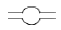
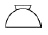
(정답률: 알수없음)
3. 기상전보에서 일반적으로 풍향을 나타내는 방위는?
- 8방위
- 16방위
- 32방위
- 36방위
(정답률: 알수없음)
4. 대기 중의 빛현상(photometeors)의 원인을 나타낸 것이다. 관계가 서로 틀린 것은?
- 빛의 굴절 - 무지개(rainbow)
- 빛의 산란 - 노을(twilight)
- 빛의 반사 - 비숍환(Bishop`s ring)
- 빛의 회절 - 광환(corona)
(정답률: 알수없음)
5. 폭풍에 해당되는 풍력계급과 풍속은 다음 중 어느 것인가?
- 6, 22~27 Knots
- 8, 34~40 Knots
- 10, 48~55 Knots
- 12, 64 Knots 이상
(정답률: 알수없음)
6. 흡수형 습도계에 관한 설명 중 적당치 않은 것은?
- 화학적 흡수방법도 있다.
- 흡수에 따른 전기적 변화를 이용하는 방법도 있다.
- 이 습도계는 일상 관측에 널리 많이 사용된다.
- 전기적 방법은 온도보정이 필요하다.
(정답률: 알수없음)
7. 짙은 안개가 끼었을 때 습구의 시도가 건구보다 높게 나타났을 경우 어떻게 판단하는가?
- 습구가 건구보다 높은 것으로 본다.
- 건구가 습구보다 높은 것으로 본다.
- 습구는 건구와 같은 것으로 본다.
- 관측치를 무효로 처리한다.
(정답률: 알수없음)
8. 다음 관측 중 보통 관측시각 정각에 관측하는 요소는?
- 기온
- 시정
- 기압
- 구름
(정답률: 알수없음)
9. 국제적으로 통일된 통보관측 시각의 횟수가 아닌 것은?
- 1일 4회
- 1일 8회
- 1일 12회
- 1일 24회
(정답률: 알수없음)
10. RECCO로 표시된 전문은 어디서 관측, 보고하는 전문인가?
- 항공기
- 선박
- 지상 관측소
- 고층 관측소
(정답률: 알수없음)
11. 강수의 관측에 관한 설명 중 옳지 않은 것은?
- 고체성 강수는 융해시킨 후 측정한다.
- 측정 가능한 이슬이나 서리는 강수량에 포함된다.
- 강수량의 관측은 관측소 부근의 강수량의 표준치가 될 수 있어야 한다.
- 이슬이나 서리가 있는 날은 강수 일수에 포함 시킨다.
(정답률: 알수없음)
12. 뷰포트의 충력계급표는 모두 몇 계급으로 되어 있는가?
- 9계급
- 11계급
- 13계급
- 15계급
(정답률: 알수없음)
13. 다음 중 다량의 강우량을 측정하는데 가장 편리하고 정확한 것은?
- 일반우량계
- 대형우량계
- 평형우설량계
- 우량승
(정답률: 알수없음)
14. 구름 관측 순서가 올바르게 기술된 것은?
- 낮은 구름에서 높은 구름을 관측한 후 전운량을 관측
- 전운량 관측 후 높은 구름에서 낮은 구름으로
- 높은 구름에서 낲은 구름을 관측한 후 전운량을 관측
- 전운량을 관측한 후 낮은 구름에서 높은 구름으로
(정답률: 알수없음)
15. 한대지방의 기온 관측에 가장 적당한 온도계는?
- 최고온도계
- 수은온도계
- 알콜온도계
- 수정온도계
(정답률: 알수없음)
16. 직달 일사량을 측정하는데 사용하는 기상측기는?
- Robitzch 일사계
- Epply 일사계
- Silver disk 일사계
- Bellani 구면 일사계
(정답률: 알수없음)
17. 안개비(Drizzle)현상 강도가 0 일 때 시정거리는?
- 1km 이상
- 0.5km 이상 1km 미만
- 0.5km 미만
- 0.1km 미만
(정답률: 알수없음)
18. 자유수면에서의 증발량에 가장 적은 영향을 주는 요소는?
- 기온
- 습도
- 풍속
- 기압
(정답률: 알수없음)
19. 해면상 파의 운동(movement of wave)에 관한 특징을 보고해야 하는 사항들 중 이에 속하지 않은 것은?
- 파향(direction of wave)
- 파주기(period of wave)
- 파형(appearance of wave)
- 파고(height of wave)
(정답률: 알수없음)
20. 주간에 수평시정을 측정할 때 중요하게 영향을 미치는 것이 아닌 것은?
- 대기전상(Electrometeors)현상
- 대기의 투명도
- 시정목표물과 그 배경의 차이
- 태양의 위치
(정답률: 알수없음)
2과목: 대기열역학
21. 압력 P, 온도 T인 공기를 습윤단열 과정으로 1000hPa 고도면까지 가져왔을 때, 이 공기의 온도는?
- 습구온도
- 상당온도
- 습구온위
- 상당온위
(정답률: 알수없음)
22. 상대습도가 58.96%인 공기의 비습이 2.8g/kg 이면 포화비습은 얼마인가?
- 1.75
- 2.75
- 3.75
- 4.75
(정답률: 알수없음)
23. 단열선도에서 기온의 상태곡선 상의 CCL에서 건조단열적으로 지상까지 내려 왔을 때의 온도는?
- 가온도
- 습구온도
- 상당온도
- 대류온도
(정답률: 알수없음)
24. Γ를 주위의 기온감율, Γd 를 건조단열감율, Γs를 포화단열감율이라 할 때 조건부 불안정은?
- Γ ＞ Γd
- Γ ＞ Γs ＞ Γd
- Γd ＞ Γ ＞ Γds
- Γ ＜ Γd
(정답률: 알수없음)
25. 습윤 단열 감률이 건조 단열 감률보다 작은 이유는?
- 기화열 때문이다.
- 잠열 때문이다.
- 융해열 때문이다.
- 승화열 때문이다.
(정답률: 알수없음)
26. 태양상수는 약 2cal/cm2 min이고 지구-대기의 알베도는 약 0.3이면 지구표면에서 흡수하는 에너지는 평균해서 몇 cal/cm2 min인가?
- 1.4
- 0.65
- 0.35
- 0.17
(정답률: 알수없음)
27. 이상 기체에 대한 열역학 제 1법칙의 옳은 식은? (단, q는 열량, Cp : 정압비열, Cv : 정적비열, P는 기압 T는 온도, v는 부피)
- △q = Cp.△T + p.△v
- △q = Cv.△T + p.△v
- △q = Cp.△T - p.△v
- △q = Cv.△T - p.△v
(정답률: 알수없음)
28. 다음 그림에서 가장 안정된 대기상태는?
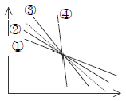
- ①
- ②
- ③
- ④
(정답률: 알수없음)
29. 다음과 같은 자료가 주어졌을 때 LCL(상승응결고도)을 구할 수 없는 경우?
- 건구온도와 노점온도
- 건구온도와 습구온도
- 건구온도와 혼합비
- 습구온도와 가온도
(정답률: 알수없음)
30. 과냉각 수면에 대한 포화증기압과 얼음면에 대한 포화증기압을 비교한 것으로 옳은 것은?
- ew ＞ei
- ew =ei
- ew ＜ei
- 비교할 수 없다.
(정답률: 알수없음)
31. Clapeyron 선도의 큰 단점은?
- 단열선과 등온선으로 이루어지는 각이 작다.
- 직선등치선은 오직 등압선일 뿐이다.
- 닫힌 경로를 따라 적분했을 때 에너지의 양이 나오지 않는다.
- 건조단열선과 포화단열선이 겹처 나타난다.
(정답률: 알수없음)
32. 기압이 일정할 때, 0℃에서 1,000cm3인 이상 기체의 체적은 100℃에서 얼마로 되는가?
- 633 cm3
- 727 cm3
- 1,273 cm3
- 1,367 cm3
(정답률: 알수없음)
33. 엔트로피(ø) 온위 (θ) 와의 관계를 옳게 나타낸 식은? (단, Cp는 정압비열, dh는 엔탈피이다.)
- dø= dh/θ
- Cpdlnø=θ
- θ=Cpdlnø+C(일정)
- ø= Cpdlnθ+C(일정)
(정답률: 알수없음)
34. 지구대기의 경우 건조단열감율로는 통상적으로 얼마를 사용하는가?
- 10K∙km-1
- 1K/100hPa
- 6K∙km-1
- 0.6K/100hPa
(정답률: 알수없음)
35. 등온과정에서 열역학 제1법칙은 어떻게 표현되는가?
- △q = p△α
- △q = α△p
- △q = Cv△T
- △q = 0
(정답률: 알수없음)
36. 건조단열선은 어떤 대기과학양이 일정한 선인가?
- 기압
- 기온
- 온위
- 상당온위
(정답률: 알수없음)
37. 다음 중에서 가장 안정한 층은?
- 역전층
- 대류층
- 구름층
- 조건부불안정층
(정답률: 알수없음)
38. 이상적인 열역학 선도에서 갖추어야 할 조건 중에서 틀린 것은?
- 등치선은 가능한 한 직선이어야 좋다.
- 여러 가지 과정에 따른 에너지의 변화는 면적에 정비례하는 것이 좋다.
- 등온선과 건조 단열선이 이루는 각은 90°가 되도록 하는 것이 좋다.
- 등압선과 등온선은 평행하게 되어야 좋다.
(정답률: 알수없음)
39. 어느 습윤공기덩이의 건조공기만의 질량을 Md, 수증기만의 질량을 Mv, 수증기의 분압을 e, 기을 p라고 한다면 혼합비(mixing ratio)는?
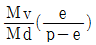
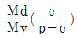
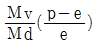
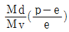
(정답률: 알수없음)
40. 정역학 방정식(Hydrostatic equaation)-△P =ρg△z에서 음부호는 무엇을 의미하는가?
- 고도의 증가에 따른 기압 증가
- 고도의 증가에 따른 기압 감소
- 고도의 증가에 따른 중력 증가
- 고도의 증가에 따른 중력 감소
(정답률: 알수없음)
3과목: 대기운동학
41. 다음의 대기파 중 가장 빠른 파는?
- 음파
- 중력파
- 관성파
- 로스비파
(정답률: 알수없음)
42. 지균풍의 방향은?
- 등압선과 30° 경사를 이룬다.
- 등압선과 60° 경사를 이룬다.
- 등압선과 직각이다.
- 등압선에 평행하다.
(정답률: 알수없음)
43. 온도풍을 잘못 설명한 것은?
- 상층의 지균풍에서 하층의 지균풍을 벡터적으로 뺀 바람이다.
- 수평 온도 경도가 있을 때 존재한다.
- 북반구에서 찬쪽을 오른쪽에 두고 분다.
- 등온선에 나란하게 분다.
(정답률: 알수없음)
44. 소동돌이에서 경계층에서의 마찰수렴에 의해 유도된 이차 순환에 대한 설명 중 틀린 것은?
- 마찰에 의한 e-배감 시간규모는 코리올리인자에 좌우된다.
- 점성확산에 의한 마찰이 난류확산보다 이차순환유발에 효과적이다.
- 이차순환에 의한 종관규모 소용돌이의 소멸에 필요한 시간규모는 대략 20일 정도이다.
- 발달이 멈춘 태풍이 약화되어 소멸하는 것은 이차순환의 영향이다.
(정답률: 알수없음)
45. 등고도면 일기도에서의 운동 방정식보다 등압면 일기도에서의 운동 방정식을 쓰는 것이 편리한 이유는?
- 고도의 기울기를 구하기 쉽기 때문
- 코리올리힘을 구하기 쉽기 때문
- 밀도를 생각할 필요 없기 때문
- 중력 가속도가 상수가 되기 때문
(정답률: 알수없음)
46. 북극과 남극지방의 평균기온을 여름과 겨울에 따라 비교하면?
- 북극의 겨울이 남극의 겨울보다 높고 북극의 여름이 남극의 여름보다 낮다.
- 북극의 겨울이 남극의 겨울보다 낮고 북극의 여름이 남극의 여름보다 낮다.
- 북극의 겨울이 남극의 겨울보다 낮고 북극의 여름이 남극의 여름보다 높다.
- 북극의 겨울이 남극의 겨울보다 높고 북극의 여름이 남극의 여름보다 높다.
(정답률: 알수없음)
47. 만유인력의 벡터와 중력의 벡터가 같은 방향으로 향하는 곳은?
- 적도
- 30°N
- 45°N
- 60°N
(정답률: 알수없음)
48. 대기 복사에 적용되는 것은?
- 이상기체의 상태방정식
- 프랑크의 법칙
- 질량보존의 법칙
- 점성의 법칙
(정답률: 알수없음)
49. 지균풍은 등압선이 직선인 경우에 기압경도력과 전향력이 균형을 이루는 균형류이므로 경도풍을 지균풍으로 근사할 경우 오차가 발생한다. 이에 대한 설명 중 틀린 것은?
- 북반구에서 시계반대방향의 경도풍을 지균풍으로 추정하면 지균풍은 과대 추정되어 진다.
- 북반구에서 시계방향의 경도풍을 지균풍으로 추정하면 지균풍은 과소 추정 되어진다.
- 로스비수가 작을수록 오차는 작아진다.
- 로스비수가 클수록 오차는 작아진다.
(정답률: 알수없음)
50. 다음 중 Roughness length(parameter)가 가장 큰 지역은?
- 눈 위
- 잔디 위
- 잔잔한 호수 위
- 높이 자란 벼 위
(정답률: 알수없음)
51. (x,y) 좌표계에서 풍속장의 수평발산은 어떻게 표시되는가? (단, u,v 는 x,y 성분의 풍속이다.)
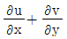
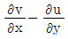
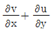
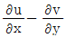
(정답률: 알수없음)
52. 다음 중 Reynolds numbers의 정의는? (U, L은 각각 수평속도 및 거리규모, v는 운동 마찰계수, g는 중력)
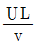
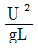
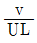
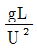
(정답률: 알수없음)
53. 장주기 변동의 하나인 블로킹(blocking) 현상에 대한 설명 중 옳지 않은 것은?
- 편서풍이 정상적으로 흐르지 못하고 남북으로 크게 사행하는 구조를 유지한 수일 이상 지속되는 현상이다.
- 블로킹이 발생하게 되면 고기압과 저기압의 이동경로가 정상상태와는 크게 달라진다.
- 북쪽으로 편서풍을 편향하게 하는 오메가형과 남북으로 거의 대칭에 가까운 Rex형의 두가기로 크게 분류할 수 있다.
- 주로 여름에 잘 발생한다.
(정답률: 알수없음)
54. 대기 경계층의 특징이 아닌 것은?
- 난류가 활발하다.
- 바람 연직 분포가 에크만 나선형과 비슷하다.
- 마찰풍이 분다
- 평균 풍속에 의한 이류가 대류권에서 가장 강하다.
(정답률: 알수없음)
55. 중, 고위도대에서 각운동량과 열을 고위도로 수송하기 위해서는 파동의 골과 마루의 축은 북쪽으로 갈수록 어떠하여야 하는가?
- 골의 축만 동쪽으로 기울어져야 한다.
- 골의 축만 서쪽으로 기울어져야 한다.
- 두 축 모두 서쪽으로 기울어져야 한다.
- 두 축 모두 동쪽으로 기울어져야 한다.
(정답률: 알수없음)
56. 모든 등온선이 동서 방향으로 나란히 서있고 북에서 남으로 1000km 당 5°C씩 증가하는 온도분포가 있다. 어느 관측점에서 이틀 동안 풍속 10m/s의 북서풍이 불었다. 1⑤ 초 후에 이 지점의 온도변화를 예상하라. (단, 1√2=0.7로 간주하라)
- -0.7°C
- -1.4°C
- -2.8°C
- -3.5°C
(정답률: 알수없음)
57. 그림과 같은 바람장에서 중심점에서의 상대와도 의 크기는? (중심으로부터 각 지점까지의 거리는 5km 이다.)
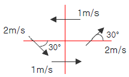
- 1×10-4S-1
- 4×10-4S-1
- -1×10-4S-1
- -4×10-4S-1
(정답률: 알수없음)
58. 대기 기층의 두께(층후)는 그 기층의 어떠한 성질에 비례하는가?
- 평균온도
- 평균풍속
- 평균수증기량
- 평균온도감률
(정답률: 알수없음)
59. 다음 중 지구 전향 가속도 (coriolis acceler-tion)의 동서 방향의 성분은 어느 것인가? (단, u,v,w는 각각 동쪽, 북쪽 및 연직방향의 속도성분이고, ø는 위도, Ω는 지구의 자전각속도이다.)
- 2Ωsinønv
- -2Ωsinønv
- 2Ωcosøsv
- -2Ωcosøsv
(정답률: 알수없음)
60. 지균풍은 적도에서 정의가 되지 않는다. 그 이유는?
- 코리올리 인자가 무한히 크다.
- 코리올리 인자가 0이다.
- 기압경도가 거의 없다
- 기압경도가 너무 크다.
(정답률: 알수없음)
4과목: 기후학
61. 지질 시대의 기후변동에 있어서 조산운동으로 심한 변화가 있었고, 빙하 시대가 있었던 시대는?
- 시생대
- 고생대
- 중생대
- 신생대
(정답률: 알수없음)
62. G.Taylor가 월별 체감기후를 도표화하기 위하여 만든 Climograghp의 횡축(x축)에 표시하는 변수?
- 습구온도
- 강수량
- 상대습도
- 평균온도
(정답률: 알수없음)
63. 대륙의 계절풍을 가상적으로 그린 그림이다. 이 그림에 대한 설명 중 맞는 것은?
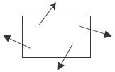
- 북반구의 여름
- 북반구의 겨울
- 남반구의 여름
- 남반구의 겨울
(정답률: 알수없음)
64. 다음 중 엘니뇨 현상과 관련한 설명 중 옳지 않은 것은?
- 대기와 해양간의 상호 작용에 의한 현상
- 적도 태평양의 해수온도가 평년보다 0.5℃높은 상태가 6개월 이상 지속되는 현상
- 편동무역풍이 약해진다.
- 적도 용승(upwelling)이 강화된다.
(정답률: 알수없음)
65. 기온의 일교차에 대한 다음 설명 중 틀린 것은?
- 일반적으로 고위도 지방이 저위도 지방보다 일교차가 크다.
- 맑은날이 흐린날보다 교차가 크다.
- 해안지역보다 내륙지방에서 일교차가 크다.
- 내륙지방에서도 초원이 삼림보다 일교차가 크다.
(정답률: 알수없음)
66. 일 최저 기온이 나타나는 때는?
- 증가하는 일사량과 감소하는 지구복사량이 같을 때
- 감소하는 일사량과 증가하는 지구복사량이 같을 때
- 일사량이 최소일 때
- 지구복사량이 일사량보다 크기 시작할 때
(정답률: 알수없음)
67. 다음 중 기상학적인 기후 인자는?
- 위도
- 수륙분포
- 기단분포
- 해류
(정답률: 알수없음)
68. 대류권에서 고도가 기후에 미치는 영향을 설명하고 있다. 적합지 못한 것은?
- 고도 증가에 따라 기압이 감소하므로 기압의 역전은 없다.
- 하층대기의 평균기온감률은 약 6.5℃/100m이다.
- 고도 증가에 따라 습도가 감소하므로 상대습도의 역전은 없다.
- 해면고도 부근의 평지보다는 고도가 높은 지표면의 일중 기온의 일교차가 크다.
(정답률: 알수없음)
69. 지구상의 어느 한점에서 받는 일사량(isolation)은 다음요인의 지배를 받는다. 옳지 않은 것은?
- 태양상수
- 대기의 투명도(transparency)
- 일조시간
- 기압배치
(정답률: 알수없음)
70. 우리 나라는 어느 풍계에 속하는가?
- 북동무역풍 지대
- 편동무역풍 지대
- 편서풍 지대
- 편동풍 지대
(정답률: 알수없음)
71. 극전선(Polar front)은 어느 기단(air mass)사이에 형성되는가?
- 북극기단과 한대기단
- 극기단과 열대기단
- 열대기단과 적도기단
- 해양기단과 대륙기단
(정답률: 알수없음)
72. WMO에서 정의하는 기후값에 해당되는 것은?
- 최근 30년 평균값
- 최근 40년 평균값
- 최근 20년 평균값
- 최근 35년 평균값
(정답률: 알수없음)
73. 하이더 그래프(hither graph)는 다음 중 어느 요소의 월 평균값을 이용한 그래프인가?
- 운량과 강수량
- 강수량과 기온
- 기온과 안개일수
- 안개일수와 뇌전일수
(정답률: 알수없음)
74. 동서지수(Zonal index)가 저지수(low index)인 때에 대한 설명 중 틀린 것은?
- 편서풍이 약하다.
- 젯트기류가 두 개로 나뉘어지는 수가 많다.
- 블로킹(blocking)현상이 나타난다.
- 남북간의 온도경도가 크다.
(정답률: 알수없음)
75. 우리나라의 겨울철과 같은 한냉기후 하에서는 냉각효과를 고려한 윈드칠(Wind chill)지수를 사용하여 체감온도를 계산한다. 이 지수에 사용되는 함수는?
- 습구온도와 증발량
- 기온과 풍속
- 상대습도와 풍속
- 기온과 상대습도
(정답률: 알수없음)
76. 다음 중 해양기후의 특성에 속하지 않는 것은?
- 비교적 온화한 기후
- 기온의 변화가 적다
- 연중 습도가 높다.
- 겨울에 한랭한 고기압이 발달한다.
(정답률: 알수없음)
77. 다음의 쾨펜(kὅppen)기후 구분 중 극지방은 어느 것에 해당되는가?
- Af
- BS
- Cw
- EF
(정답률: 알수없음)
78. 우리 나라를 포함한 동양의 1년의 절후의 수는?
- 72
- 48
- 24
- 12
(정답률: 알수없음)
79. Martonne이 정의한 건조지수 계산식(AI= P/T+100)에서 사막에 해당되는 지수값은 얼마 일 때인가? (단, T는 연평균기온(℃)이고, P는 연강수량(mm)이다.)
- 5 이하
- 10~20 이내
- 20 이상
- 40 이상
(정답률: 알수없음)
80. 대륙의 동안기후의 특징 중 맞는 것은?
- 서안기후보다 기온의 연교차가 크다.
- 편서풍에 의하여 해양의 영향을 받는 기후이다.
- 겨울에는 같은 위도상의 서안보다 따뜻하다.
- 여름에는 강수량이 적고 겨울에는 많다.
(정답률: 알수없음)
5과목: 일기분석 및 예보론
81. 층후선도에 대한 다음 기술 중 맞는 것은?
- 상층의 등압면 일기도의 일종이다.
- 노점온도선과 층후선은 일치한다.
- 전선은 층후선이 조밀한 곳에 위치한다.
- 기압계의 이동방향 예상에는 이용되지 않는다.
(정답률: 알수없음)
82. 열대지방의 일기 특성을 설명한 것 중 틀린 것?
- 기온의 연교차보다 일교차가 크다.
- 기온 경도가 중위도보다 작다
- 기압경도가 중위도보다 작다.
- 노점온도가 30℃이상인 날이 빈번하게 발생한다.
(정답률: 알수없음)
83. 중위도 지방에서 약 30km고도에서의 기압은 대략 얼마인가?
- 약 0.1 hPa
- 약 1 hPa
- 약 10 hPa
- 약 100 hPa
(정답률: 알수없음)
84. 대기선도(Skew T-log P diagram)에서 구하는 대류 응결고도에 관한 설명 중 올바르지 못한 것은?
- 지표면의 가열로 에너지를 받은 후, 단열적으로 상승하여 포화에 이르는 고도
- 대기선도에서 지상의 노점온도를 지나는 포화혼합비선과 환경곡선이 만나는 점의 고도에 해당한다.
- 이 고도이상에서는 공기덩어리가 자동으로 계속 상승한다.
- 보통 기류의 강제상승으로 생성되는 적운형 구름의 운저고도에 해당한다.
(정답률: 알수없음)
85. 북쪽으로 이동하는 기류에 대하여 지구와도(Corilis`parameter)의 변화를 맞게 기술한 것은?
- 증가한다.
- 감소한다.
- 일정
- 관계없다.
(정답률: 알수없음)
86. 흑체복사의 강도가 최대가 되는 파장은 그 흑체의 절대온도에 반비례한다는 이론은 누구의 법칙인가?
- 키르호프
- 비인
- 스테판 볼즈만
- 플랑크
(정답률: 알수없음)
87. 지상풍은 등압선과 평행하게 불지 않고 등압선을 가로지른다. 무엇 때문인가?
- 지표면의 마찰
- 지구의 중력
- 기압 경도
- 원심력
(정답률: 알수없음)
88. 고기압권 내에서 바람이 가장 약한 곳은 어느 곳인가?
- 고기압 전면
- 고기압 중심
- 고기압 후면
- 일정하지 않음
(정답률: 알수없음)
89. 상층 기압능(trough)과 기압골(ridge)에 관한 설명으로 올바르지 않은 것은?
- 상층 기압능은 기압이 높은 곳이고, 상층 기압골은 기압이 낮은 곳이다.
- 상층 기압골의 전면에서는 공기의 발산이 일어난다.
- 상층 기압골의 후면에서는 공기의 하강류가 존재한다.
- 상층 기압골의 전면에서는 지상 고기압이 위치한다.
(정답률: 알수없음)
90. 습윤공기 1 kg 속에 포함되어 있는 수증기의 질량(g)과의 비율을 무엇이라 하는가?
- 비습
- 상대습도
- 혼합비
- 절대습도
(정답률: 알수없음)
91. 장마전선에 관한 설명 중 바르지 않은 것은?
- 일종의 정체 전선이다.
- 위치를 파악할 때 지상의 노점온도, 850hPa의 전선대, 제트기류 등을 사용한다.
- 장마전선 상으로 저기압이 통과하면 전면에서는 강수량이 적고, 후면에서 날씨가 약화된다.
- 장마 일기에 기압골이 통과하거나, 태풍이 북상하게 되면 장마전선이 북상하여 종료되기도 한다.
(정답률: 알수없음)
92. 일기도상에 단색으로 폐색전선을 나타내려고 한다. 어떻게 나타내는가?
(정답률: 알수없음)
93. mTw 기단의 특징은?
- 고온다습하다.
- 건조한랭하다.
- 고온건조하다.
- 저온과습하다.
(정답률: 알수없음)
94. 상태곡선의 기온 감율이 습윤단열감률보다 작을 때의 상태는?
- 안정
- 불안정
- 조건부 불안정
- 대류 불안정
(정답률: 알수없음)
95. 다음 중 태풍의 에너지 원천은?
- 하강기류
- 수증기의 응결잠열
- 복사열
- 해수의 기화열
(정답률: 알수없음)
96. 전선대에 기류가 수렴되는 전선의 세력은?
- 강화된다.
- 약화된다.
- 변화없다.
- 소멸된다.
(정답률: 알수없음)
97. 로스비(Rossby)파의 발생원인으로서 가장 중요한 것은?
- 풍속의 남북변화
- 코리올리 파라메타(f)의 위도변화
- 일사량의 위도 변화
- 지구회전축의 변동
(정답률: 알수없음)
98. 한냉전선 주변에서 잘 나타나는 구름의 종류는 다음 중 어느 것인가?
- Cb
- Ns
- Ac
- Sc
(정답률: 알수없음)
99. Blocking high의 발생지는?
- 한대지방
- 아열대 지방과 적도지방
- 열대 지방
- 온대지방과 아한대 지방
(정답률: 알수없음)
100. 국제 기상 전보식에서 4PPPP군의 PPPP는 다음 중 어느 것을 나타내는 부호인가?
- 해면기압
- 현지기압
- 기압변화량
- 24시간 강수량
(정답률: 알수없음)